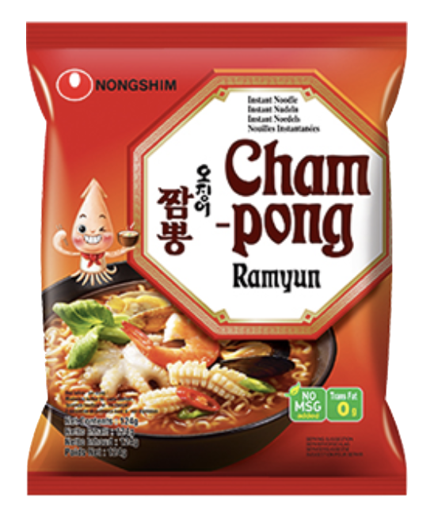
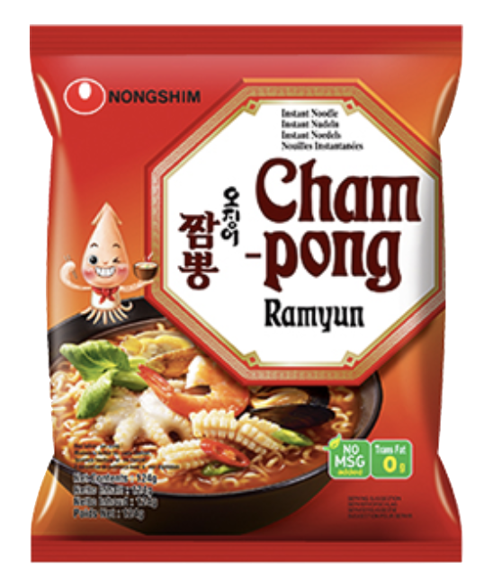

Dried Champong Ramyun
Weight: 103g
Year of Release: 2021
Rating: 3.4/5
Notable flavors: seafood, vegetables, garlic, bok choy, squid fish cake, mussels
I prefered the champong ramen, but my sister prefered the dried champong ramen. my mom prefered neither.

 
